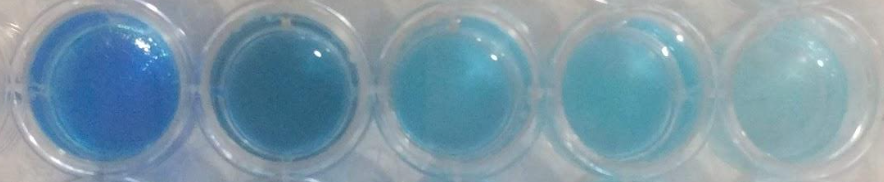
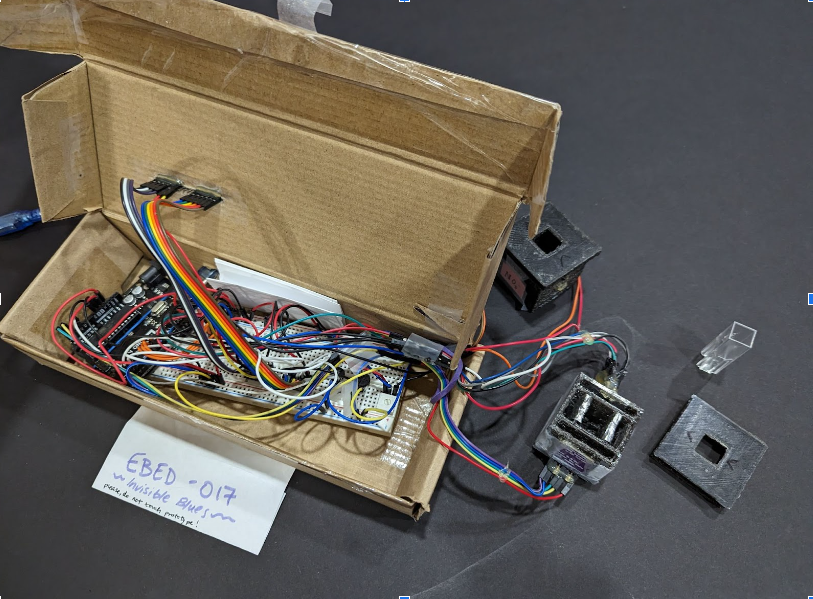
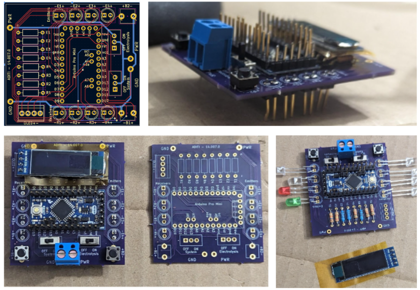
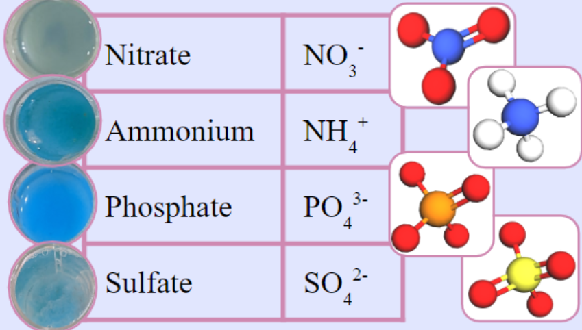
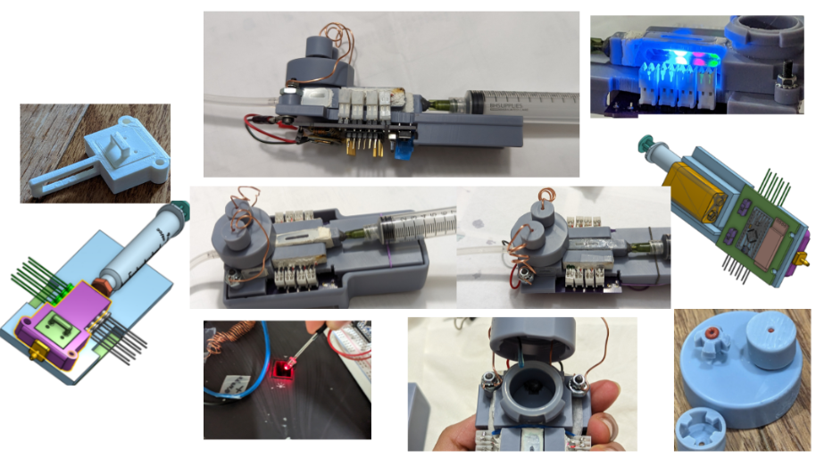
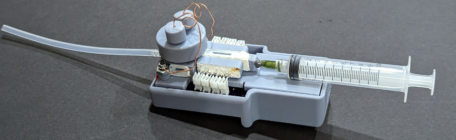
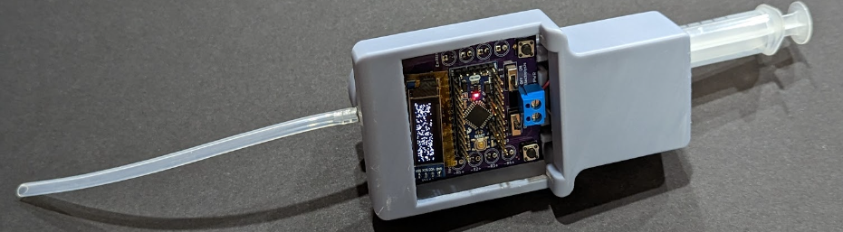

By Aditi Bhaskar, April 2023
Late summer 2020, I noticed surreptitious congregations of blue-green algae in my pond: toxic. I continued research on the surplus nutrients’ toxic repercussions, species’ endangerments, and finding an accessible solution to the issue. Over 1/4 of a decade, this culminated in 3 award-winning science fair projects.
Day after day, I looked into visually detecting nitrogen using chemical manipulations. There were weeks with 12-hour long lab days, and over 500 reaction wells filled with unique test combinations to reveal the most optimal method. After testing methods such as indicator compounds and chromatography, all inspired by my concurrent chemistry class and internet searches, single cell electrolysis shined as the best visual indicator, especially when completed with copper electrodes. After five minutes, single cell copper electrolysis turned a sample blue based on the sample’s concentration of nitrogen, in forms of ammonium and nitrate.
However, this method did not account for mixed samples, say, of nitrogen in the form of nitrate mixed with sulfate. Both compounds turn blue, so the copper electrolytic visual indicator lacked an ability to distinguish between compounds.

Spectrometry was introduced to my nitrogen detection method as an adaptation to account for the distinguishability issue. I built a mini spectrophotometer to run my tests on electrolyzed samples, and my spectrophotometer included a darkbox with a photoemitter, photodetectors, and appropriate electronics and code to compute the molarity of a sample from its raw transmittance intensity. I also learned rudimentary CAD and novice-level electronics skills this year, starting without knowing “power” vs. “ground” and ending with an ability to wire a photoemitter and photodetector with appropriate resistors and read their transmittance intensity values.
Spectrometry worked well to distinguish nitrate and ammonium, two common forms of nitrogen in soil and water samples. However, this version of the device was not refined enough to take directly to the market.

I designed and built a handheld device to detect nutrients, reducing bulkiness and increasing ease of use. This included the physical device CAD, PCB, and coding systems to run in a state-machine flow. For CAD, I used Onshape to design a fluid body with highly turbid channels for fluid flow. For custom PCB design, I used what I had learned from breadboard work to create a schematic and PCB design, which included an Arduino microcontroller with connections to photoemitters, photodetectors, an OLED board for communication, buttons, switches, and a battery connection. Many electronics and CAD skills were learned from the very beginning this year, such as creating special extrusions, fillets and chamfers, soldering, engineering compact solutions, maintaining vacuum seals in fluid chambers, maintaining device modularity, and more!
Additional compounds such as phosphate and sulfate were integrated into my handheld device to expand its scope of detection. My device now detects and measures four nutrients in aqueous samples: nitrate, ammonium, phosphate, and sulfate.



My device is named ASCEND: Aqueous Spectrometric Copper-Electrolytic Nutrient Detector. I am the sole inventor on US Non-Provisional Patent 17|963,832 (Pending).
ASCEND does not detect copper, rather it uses copper in its detection system as a key material.

